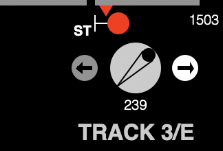

NXSYS/Mac Version 2.5 includes changes to the appearance, and conditionally, function of traffic levers. If Windows NXSYS is ever released again, these changes will be there, too.
|  |
The active “pointer” on a traffic control knob now looks more like a grip-turnable thin triangular handle extending across the diameter, with the classic dot now at its active, indicating end. This looks more like their prototypes on real NYCT NX/UR panels. Furthermore, rather than “all the way to the left” and “all the way to the right”, the new knobs show at 45° to the left or right, again, more like real panels. The new “tristate” ones, to be described, can also show straight up, as in real panels. As at left. |
If the pair “:TRAFFIC-LEVERS-TRISTATE T” appears in the route definition, all traffic lever knobs in the interlocking will be shown and operable as Tristate, that is, having three distinct states, left, right, and neutral. When not being clicked on (i.e., click and not release), they will remain in the “straight-up” (neutral) position. When clicked on, on their left or right halves, they will turn to that direction as long as the mouse is held and not released. When released, they will snap back to “neutral”, as per their prototypes. It is not necessary to hold the mouse down; it merely looks realistic—the effect on the circuitry is the same if the desired half is simply clicked on.
Tristate traffic levers are a global option rather than a traffic-lever option in order to facilitate forward and backward compatibility of interlockings and versions of NXSYS. If this new version is used with an older interlocking without the :TRAFFIC-LEVERS-TRISTATE specification, the traffic levers will act as before, and stick to the left or right, and assert the logic levels NL or RL continuously, as before, and merely appear a bit different; any click will flip the knob, but, of course, will not flip traffic unless the correct conditions apply. With :TRAFFIC-LEVERS-TRISTATE, one or the other of those relays will be pulsed by the mouse click, and not held. That means that the old circuitry will fail if not rewritten to handle non-holding lever controls properly.
It is possible to design the circuitry (of single-knob, single-panel traffic levers, at least) such that either temporary (pulsing) or holding-style knobs work properly. The new 240th St. and Atlantic Ave., whose traffic circuitry has been massively simplified, are so designed. In a sentence, the traffic relays FNS (“traffic entrance stick”) and FXS (“traffic exit stick”) form a “J-K flip flop” whose J and K are set by the NL and RL levels (which by which depends upon the NORMAL-LEFT/RIGHT property), both gated by a single condition, L (as in switch locking) which affirms vacancy of all contained track sections as well as reset/release (AS) of all controlled signals and in-pointing route-locking in both directions. If the condition L is not met, manipulating the knob does not affect the underlying control, as in real panels, and as with auxiliary switch keys. (This only applies to single-knob, single-panel controls; If you actually have a double-ended traffic lever, I doubt that it worked heretofore.)
Pre-Tristate (pre 2.5) traffic levers are two-position “rocker” switches, either left or right at any time, and may or may not reflect the underlying control, which, in real panels or old or new NXSYS, is indicated by the two indicator lights around it. Tristate levers look and “work” more like their prototype. Real traffic control knobs only communicate to the circuitry at the time the are being turned, and snap back, as do the new knobs.
Real NYCT traffic levers indicate red only when the controlled track extent/block is occupied. If the block is vacant, but there are cleared or called signals in it, or route-locking at the ends pointing into it, the traffic lever indicators remain white, but are equally locked (i.e., manipulating the knob will not have any effect.) There are conditions when attempted manipulation causes the indicators to flash (code).
In NXSYS, with either dispensation (2.5 or earlier, Mac or Windows), a white indicator signifies that not only is the block vacant, but no controlled signals in either direction are not fully reset (of course, it is impossible that their could be conflicting signals active) as well as route-locking routing trains into it. If either condition is not met, the indicator will be red. If the indicator is white, the lever can be flipped. If red, not. Only the opposing indicator is ever dark. NXSYS traffic control indicators currently never flash.
Back to Release Notes.